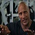

Dwayne Johnson is The Rock Reacts
Now International movie star, Dwayne Johnson was once known solely as 'The Rock.' Followers of WWE, the wrestling entertainment sport, and fans of Dwayne's will recall the ex-wrestler's first-ever match held in 1996 at Madison Square Garden. '90s kids, however, will also recall that even amidst exchanging WWE cards, some matches were pretty-cringe worthy. It seems that 'The Rock' may have forgotten. In a new segment on his official Youtube channel called The Rock Reacts, Dwayne kicked off the proceedings by reacting to that very match, and providing timely commentary on the same. On November 17, Dwayne was pitted against Jake 'The Snake' Roberts, and this year marks the 20th anniversary of the match. Then known as 'Rocky Maivia,' Dwayne called his haircut a 'Chia pet' and his unfortunate fashion choice, however, he also recalled how this match changed his entire life.
Recalled Dwayne, "the moment Jake got beat, you felt an immediate shift in the tone of the crowd, 22,000 people in Madison Square Garden. They looked at the two bad guys, they looked at the new rookie, and in that moment, 22,000 people can either go, 'Shit, he's gonna get his a** kicked," or they go, "Shit, he's gonna get his a** kicked, but you know what? We like that dude, and we want him to kick a**, too." And 22,000 people did something in this moment that defined my career and literally changed by life."
Apparently, his parents and grandmother had no clue that he was winning the match. "This particular night, aside from me wearing some bright-a** blue wrestling gear, and a really awful haircut that I had no business in; I looked like pineapple and a Chia Pet all mixed in one, it was a very, very special night, and this night really kicked off my career."
Currently, he is busy filming the Baywatch reboot film, which also stars Priyanka Chopra in the antagonist's role. He will later be seen in the Jumanji sequel, and voice-acting in Disney's Moana. Talk about a winning streak.